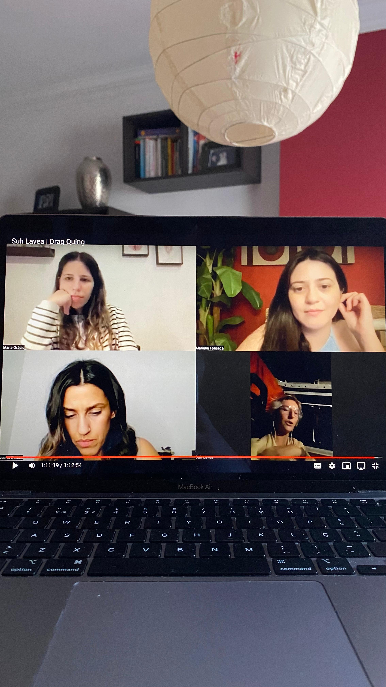
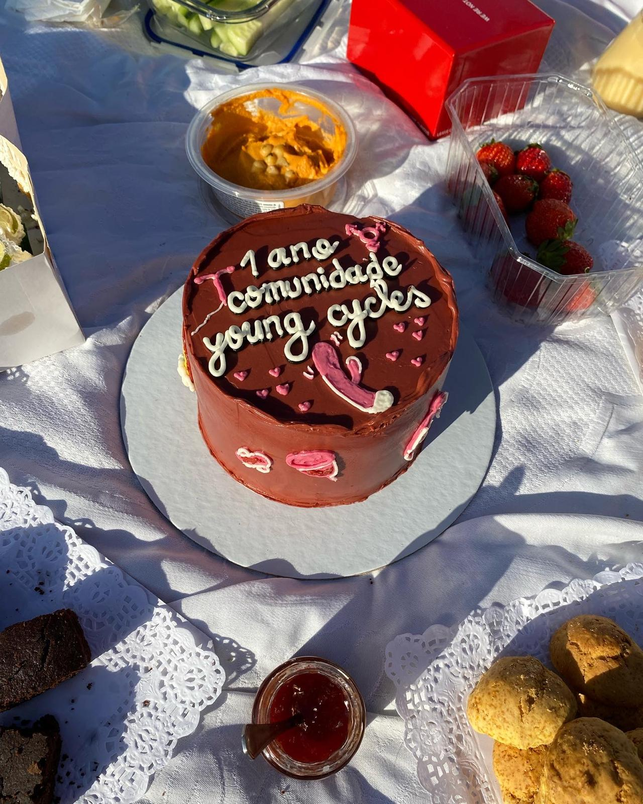

Online · Ver quando quiseres
Biblioteca de Sessões Gravadas
Três anos de conversas sobre sexualidade, feminismo e temas queer, para veres ao teu ritmo.
Durante três anos dinamizei a Young Cycles, uma comunidade online com sessões semanais sobre sexualidade, feminismo e temas queer, muitas com especialistas convidados. As sessões foram gravadas e agora podes vê-las quando e onde quiseres.

Tópicos abordados
A comunidade
Young Cycles

Testemunhos
O que diz quem fez parte
Estar nestas sessões foi muito melhor do que pensava, tudo o que é falado é imensamente importante, sinto até que devia ser lecionado em escolas por exemplo! Acho que todas as pessoas deviam passar por algumas sessões contigo e aprenderiam muito! (…) Com a nossa convidada e com as nossas conversas aprendi mais do que em todos os posts que tentei ler haha adorei mesmo a experiência e muito obrigada de coração!
Perguntas frequentes
Sobre a biblioteca
Como tenho acesso à Biblioteca de Sessões Gravadas?
Envia-me mensagem no Instagram e dou-te acesso. Custa 9,99 € por mês, sem fidelização.
Posso cancelar quando quiser?
Sim. Não há fidelização: podes ficar só um mês, se quiseres.
Tenho de ver as sessões a uma hora certa?
Não. As sessões estão gravadas, por isso vês quando e onde quiseres.
Contacto